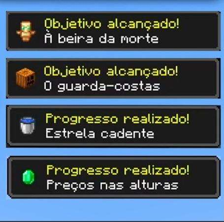
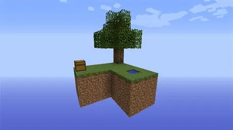
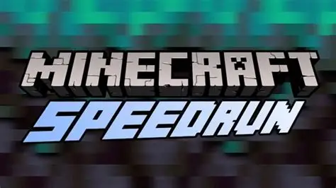
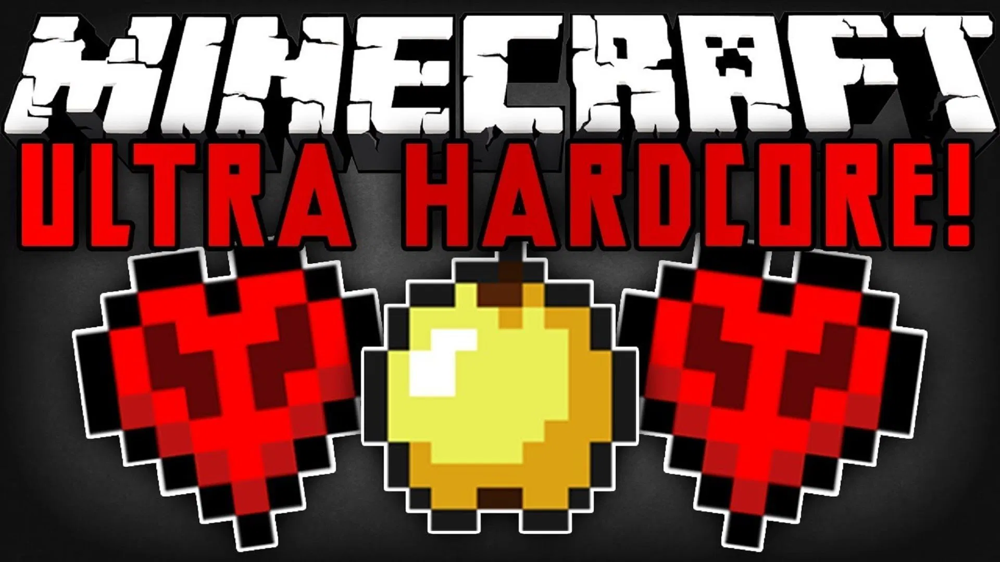

1. Desafios Oficiais do Jogo
Modo Hardcore: É o teste definitivo de sobrevivência. O jogo fica na dificuldade máxima e você tem apenas uma vida. Se você morrer, o seu mundo é deletado para sempre. Conquistas / Progressos (Advancements): O jogo possui uma lista de dezenas de missões que servem como guia. Elas vão desde tarefas simples (como "Pegar Madeira") até desafios bizarros e difíceis, como levar um Ghast (um monstro gigante do Nether) para o mundo normal.


2. Desafios Criados pela Comunidade
SkyBlock (O mais famoso): O jogador nasce em uma ilha flutuante minúscula no meio do nada, contendo apenas uma árvore e um baú com um balde de lava e um bloco de gelo. O objetivo é usar a lógica do jogo para expandir a ilha e sobreviver com quase nenhum recurso.

Desafio dos 100 Dias: Um desafio que virou febre no YouTube. O objetivo é sobreviver em um mundo (comum ou hardcore) por 100 dias dentro do jogo (cerca de 33 horas reais) e mostrar tudo o que você conseguiu construir e evoluir nesse período. Speedrun (Corrida contra o tempo): O desafio aqui é terminar o jogo (derrotar o Ender Dragon) o mais rápido possível. Os jogadores usam técnicas avançadas de matemática e mecânicas do jogo para zerar em poucos minutos.
Speedrun (Corrida contra o tempo): O desafio aqui é terminar o jogo (derrotar o Ender Dragon) o mais rápido possível. Os jogadores usam técnicas avançadas de matemática e mecânicas do jogo para zerar em poucos minutos.

UHC (Ultra Hardcore): Um modo de sobrevivência onde a sua vida não se regenera sozinha, mesmo se a sua barra de fome estiver cheia. Para recuperar vida, você é obrigado a criar maçãs douradas ou poções de cura.